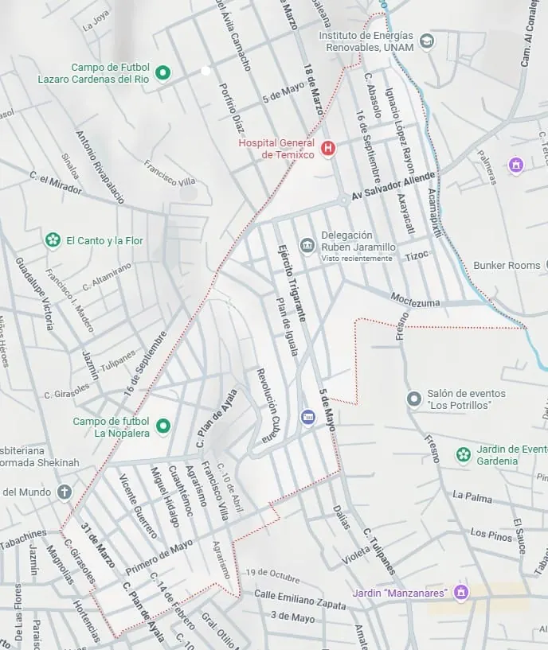

Organización Territorial
Está dividida internamente en 8 barrios tradicionales.
Zonas identificadas por la comunidad:
- Zona Pinos
- Zona Villa de las Flores
- Zona Nopalera
Inicio / Territorio y barrios de la colonia
Estructura comunitaria, división por barrios y extensión de la Colonia Rubén Jaramillo, en Temixco, Morelos.
La Delegación Rubén Jaramillo, en el municipio de Temixco, cuenta oficialmente con ocho barrios. La colonia abarca una superficie estimada de entre 68 y 85 hectáreas, originada en el predio fundacional tomado en 1973 que con el tiempo consolidó su trazo urbano actual.
Está dividida internamente en 8 barrios tradicionales.
Eje principal: La avenida Salvador Allende funciona como la vía principal que organiza el comercio y la movilidad.
Representación del perímetro que comprende la colonia: aproximadamente 85 hectáreas y los 8 barrios que la forman.

¿Necesitas hacer una gestión o resolver una duda? Llámanos o visítanos en la delegación: te atendemos con gusto.